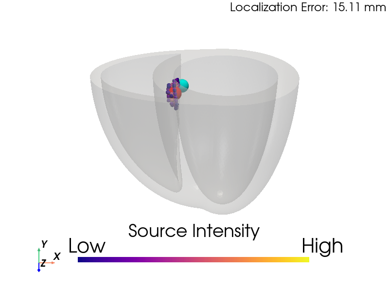

My work spans algorithm development, finite element modeling, data analysis, and machine learning, with applications in cardiac simulations and beyond. Below are key experiences showcasing my expertise in computational science and engineering. Click "Read More" to explore detailed insights for each project.
Inverse Modeling of Cardiac Activation Sites from Magnetocardiography for Ventricular Arrhythmia Localization

Developed inverse modeling algorithms to localize cardiac activation sites from magnetocardiography (MCG) signals, enhancing non-invasive diagnosis of ventricular arrhythmias for clinical applications.
Skills: Algorithm Development, Software Development, Python, Signal Processing, Data Analysis
Links: To be added
At Genetesis, I developed inverse modeling algorithms to localize premature ventricular contraction (PVC) activation sites non-invasively using magnetocardiography (MCG) signals, co-registered with MRI or CT imaging. I evaluated two methods—Equivalent Current Density Vector (ECDV) and AGMN-RUG Spatial Filter—using simulated MCG data from 17 American Heart Association heart segments. The AGMN-RUG method outperformed ECDV and another approach, achieving an average localization error of ~10mm and 96% accuracy in predicting endocardial vs. epicardial surfaces, enhancing CardioFlux diagnostics.
Implemented the ECDV method, using a grid search over a heart mesh to solve for current density via least squares, identifying activation sites with ~13mm average error.
Developed the AGMN-RUG Spatial Filter, an iterative algorithm with a recursively updated Gram matrix, achieving ~10mm error and 96% surface prediction accuracy.
Compared both methods against a third approach, validating performance with simulated MCG signals from 17 cardiac segments.
Utilized Python (NumPy, SciPy) for signal processing and visualization, automating workflows for clinical applications.
Collaborated with R&D teams to refine algorithms, paving the way for non-invasive PVC ablation planning.
Inverse Modeling of Cardiac Anatomy from Magnetocardiography Signals
Developed AGMN-RUG-based algorithms with a box-shaped search grid to reconstruct heart location and 3D anatomy from magnetocardiography (MCG) signals, exploring anatomical modality of MCG.
Skills: Algorithm Development, Software Development, Python, Signal Processing, Temporal and Spatial filtering, Data Analysis
Links: To be added
At Genetesis, I extended the AGMN-RUG Spatial Filter algorithm to reconstruct the heart’s location and 3D anatomy non-invasively from magnetocardiography (MCG) signals, complementing activation site localization. Using a box-shaped search grid, I tracked current density vector movements over extended periods to estimate myocardial position and shape. By applying filtering and smoothing, I achieved rough estimations of heart distance, rotation, and 3D structure, adding a novel anatomical modality to CardioFlux diagnostics.
Adapted the AGMN-RUG Spatial Filter to track activation sites over time within a box-shaped search grid, estimating heart location (distance and rotation).
Developed algorithms to reconstruct the 3D myocardial shape by filtering and smoothing current density vector data from MCG signals.
Utilized Python (NumPy, SciPy) for signal processing, visualization, and automation of anatomical reconstruction workflows.
Enabled non-invasive estimation of heart anatomy, enhancing MCG’s diagnostic capabilities for cardiovascular conditions.
Collaborated with R&D teams to validate reconstructions against simulated data, supporting clinical integration.
Cardiac Electrophysiology Simulation at Genetesis
Developed multiscale FEA-based algorithms to simulate cardiac electrophysiology, generating MCG signals on a 6x6 sensor array, enabling disease mechanism insights and CardioFlux device improvements.
Skills: Algorithm Development, Finite Element Analysis, Software Development, Python (FEniCS, NumPy, SciPy), Signal Processing, Data Analysis, R&D
Links: To be added
At Genetesis, I developed multiscale finite element analysis (FEA) algorithms to simulate cardiac electrophysiology (EP) from cell to organ level, generating magnetocardiography (MCG) signals on a 6x6 sensor array for CardioFlux diagnostics. This platform enabled the R&D team to explore disease mechanisms, optimize device design, and investigate MCG-ECG relationships. Using Python and FEniCS, I automated simulations and data visualization, supporting clinical validation and product innovation for non-invasive cardiac diagnostics.
Designed multiscale FEA algorithms to model cardiac EP, simulating electrical activity from cellular ion channels to whole-heart propagation.
Generated MCG signals using a 6x6 sensor array configuration, replicating CardioFlux sensor outputs for diagnostic analysis.
Utilized Python (FEniCS, NumPy, SciPy) for FEA simulations, signal processing, and automated visualization of EP data.
Enabled R&D insights into cardiac disease mechanisms and MCG-ECG correlations, validated against simulated and clinical data.
Improved CardioFlux device design through simulation-driven feedback, enhancing diagnostic accuracy.
Collaborated with R&D teams to integrate simulations into product development, delivering weekly progress visualizations.
ENRICHMENT In Silico Clinical Trial Project at Dassault Systèmes
Contributed to the FDA-collaborated ENRICHMENT project, developing Abaqus-based FEM simulations for cardiovascular devices and machine learning models for virtual patient cohorts. Supported the ENRICHMENT Playbook for regulatory in silico clinical trials.
As a Biomechanical Engineer Intern at Dassault Systèmes, I played a key role in the ENRICHMENT In Silico Clinical Trial Project, a 5-year collaboration with the U.S. FDA to advance regulatory approval of cardiovascular devices using virtual twins. Building on the Living Heart Project’s simulated 3D heart model, I contributed to the following:
Developed finite element models (FEM) in Abaqus to simulate MitraClip deployment for mitral valve repair, validating device performance against clinical benchmarks.
Integrated machine learning (scikit-learn) to create surrogate models for virtual patient cohorts, enabling scalable in silico clinical trials.
Incorporated baroreflex feedback loops into cardiac circulation models, enhancing simulation realism for hemodynamic studies.
Collaborated with FDA advisors and clinical experts to align simulations with regulatory requirements, supporting the 21st Century Cures Act.
Contributed to the ENRICHMENT Playbook, a peer-reviewed guide for establishing credibility in in silico trials, published in 2024.
My work on the 3DEXPERIENCE platform facilitated virtual collaboration among multidisciplinary teams, accelerating trial design and reducing reliance on animal testing. I presented simulation results to principal investigators, driving innovations in device evaluation workflows and regulatory science.
MyoFE: Multiscale Cardiac Modeling
Developed MyoFE, a multiscale FEA framework for left ventricular mechanics, integrating baroreflex control and growth laws to simulate valvular diseases and remodeling, with applications in drug response.
Skills: Algorithm Development, Finite Element Analysis, Python (FEniCS, NumPy, SciPy), Computational Modeling, Data Analysis, Research
MyoFE is a multiscale finite element analysis (FEA) framework I developed to simulate left ventricular (LV) mechanics and remodeling, integrating myofilament dynamics, baroreflex control, and volumetric growth laws. Implemented in Python using FEniCS, MyoFE couples sarcomere-level contractile mechanisms with organ-level circulation to model valvular diseases like aortic stenosis and mitral regurgitation. The framework predicts realistic pressure-volume loops, cardiac outputs, and concentric/eccentric hypertrophy, validated against clinical data. Published in Computers in Biology and Medicine, Acta Biomaterialia, and Annals of Biomedical Engineering, MyoFE advances computational studies of cardiac remodeling and drug response.
Designed a multiscale FEA model to simulate LV mechanics, integrating myofilament dynamics with whole-heart circulation.
Incorporated baroreflex control to regulate heart rate and vascular tone, ensuring realistic hemodynamic responses.
Extended MyoFE with volumetric growth laws to predict concentric and eccentric hypertrophy under pressure and volume overload.
Utilized Python (FEniCS, NumPy, SciPy) for FEA, data processing, and visualization of simulation results.
Published findings in Comput Biol Med, Acta Biomater, and Ann Biomed Eng, supporting applications in drug development and cardiac research.
PyMyoVent: LV Growth Simulation
Built PyMyoVent, a Python-based model simulating left ventricular growth in valvular diseases. Extended with growth algorithms to predict concentric and eccentric remodeling, validated against clinical data.
Skills: Algorithm Development, Python, Research, Data Visualization
PyMyoVent is a Python-based framework I developed to simulate left ventricular function and growth in response to valvular diseases like aortic stenosis and mitral regurgitation. I extended the model with a growth algorithm based on volumetric growth theory, where concentric growth (wall thickening) responds to total fiber stress and eccentric growth (chamber dilation) to passive stress. The framework, validated against clinical measures, predicted LV remodeling and reversal post-treatment, as published in Ann Biomed Eng. A YouTube demo showcases its capabilities, and the open-source code is widely used in cardiac research.
PyCMLutil: Data Analysis Toolkit
Created PyCMLutil, a Python library for curve-fitting, plotting, and data analysis, streamlining scientific visualization workflows for cardiac research.
Skills: Python (pandas, Matplotlib), Data Analysis, Software Development
PyCMLutil is a Python library I developed to streamline data analysis and visualization for cardiac research. It provides tools for curve-fitting, plotting, and processing large datasets, leveraging libraries like pandas and Matplotlib. The library, available on PyPI, has been adopted by researchers for its user-friendly interface and robust functionality. I designed it to automate repetitive tasks in scientific workflows, such as generating publication-quality plots, significantly improving efficiency in multidisciplinary projects.
Myocardial Strain Analysis in Mice
Validated CMR feature-tracking for quantifying LV systolic strains in mice against echocardiography speckle tracking, collaborating with physiologists to assess cardiac function in preclinical models.
Skills: Data Analysis, Image Processing, Research, MATLAB, Statistical Analysis
In collaboration with the University of Kentucky’s Department of Physiology, I validated cardiac magnetic resonance (CMR) feature-tracking (FT) for quantifying left ventricular (LV) systolic strains in mouse models, using high-resolution echocardiography speckle tracking (STE) as the gold standard. Using 7T MRI and Segment software, I analyzed CMR images from 10 C57BL/6J mice to measure longitudinal, circumferential, and radial strains, achieving high agreement with STE (e.g., global longitudinal strain: -18.5 ± 2.2% vs. -18.9 ± 2.7%). Published in Cardiovascular Engineering and Technology, this work established CMR-FT as a reliable, non-invasive tool for preclinical cardiac research, supporting studies of heart disease and drug development.
Processed 7T MRI cine images with Segment software to quantify LV systolic strains (longitudinal, circumferential, radial) in 10 wild-type mice.
Compared CMR-FT results against STE (VevoStrain), achieving high correlation (r > 0.85) and minimal Bland-Altman bias (e.g., 0.4 ± 1.8% for longitudinal strain).
Developed MATLAB-based workflows for image processing and statistical analysis, including Pearson correlation and paired t-tests.
Demonstrated CMR-FT’s reliability for global and segmental strain analysis, complementing STE’s temporal resolution with CMR’s spatial resolution.
Published findings in Cardiovasc Eng Tech, highlighting CMR-FT’s potential for non-invasive assessment in preclinical cardiac studies.
Interested in collaborating or learning more about my work? Feel free to contact me!